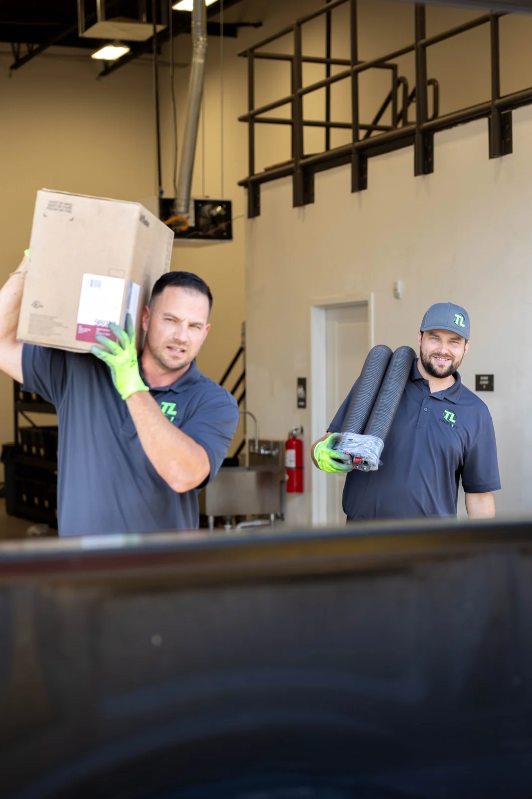

01
Broken springs
Broken spring and spring-system diagnosis and repair.
Local garage door service · St. George, Utah
Repairs, openers, and new garage doors. Local service in St. George and the surrounding area.
No charge to come out. Clear pricing before work starts.
Local people. Hands-on work.
13 years of combined field experience. The owners do the work.
The people in the ads are the people at your door.
01 / What we work on
From a broken spring to a complete replacement, start with the service that fits your situation.
Explore our servicesSprings balance the weight. They help the door lift smoothly and stay balanced.
Broken spring and spring-system diagnosis and repair.
Cables, rollers, hinges, tracks, brackets, seals, trim, and other common door problems.
Opener diagnosis, repair, replacement, and new installation.
Replacement consultations and professional garage-door installation.
Inspection, lubrication, alignment checks, and adjustments to help the system run smoothly.
Help for doors that are hanging, off-track, will not close, or may be unsafe to operate.
Call 435-900-455702 / We show our work

We calculate the correct spring for your specific door — weight, width, height and cycle rating — instead of matching whatever was on it.
Springs come in different cycle ratings. A 10,000-cycle spring is one example, not the only option. We explain the available ratings and help you choose for how often you use your door.
When one spring breaks we replace both — they share a cycle life, and the second is already near the end of it.
There's almost always more than one way to fix a door. We'll show you all of them. No pressure. No sales tactics.
What to expect on the visitLube & Tune
$39
Lubrication, tune-up and inspection to help keep your garage door running smoothly.
Book a $39 Lube & Tune03 / What happens next
Tell us what the door is doing and when the problem started.
A technician inspects the door and opener, identifies the problem, and explains the available options.
You choose the repair, maintenance, or replacement option that fits the situation.
True Lift completes the approved work and checks the system's operation before wrapping up.
A clear price
If we find something that changes the price, we stop and re-quote.
No hidden fees.
Talk through your options ↗Your appointment is not confirmed until Housecall Pro shows or sends a confirmation.
Customer stories & Google reviews
Video could not play. Open Jayci’s video
I had True Lift come and repair my garage door when it wouldn't close all the way without opening up again, and they were great. Quality work, showed up on time, kept in contact with me. All around a great experience. Highly recommend!
Colin came out to my house for a tune-up and showed me things to look for with my current door such as small cracking. Gave me different options. Definitely will be using him and True Lift again!
This is my second interaction with Chris of True Lift Garage Door. Both times he was professional, knowledgeable and explained thoroughly the problem and steps to repair. He is prompt and courteous. I would definitely recommend True Lift to anyone needing service on a garage door service/repair.
The spring on our garage broke, and Chris came out to fix it late in the evening. I highly recommend True Lift; they are efficient and fairly priced.
I had an amazing experience with True Lift Garage Doors. They installed 2 new lift Master openers and new rollers on both garage doors. They were on time, professional and very easy to work with. I highly recommend them!!! Honest reliable people are hard to come by these days. And these guys are the real deal!
Chris was quick to respond and get us scheduled for service. He is very knowledgeable and quickly determined why our 5 year old garage doors were sounding so rickety. He had them running smooth and quiet within a half hour!
Amazing company! Honest, fair, and very knowledgeable. I am so pleased knowing I have someone who can take care of my existing doors but also help me find some good quality doors when I am ready to upgrade.
Great service, great people. Got my garage doors tuned up after years of use. Definitely recommend and will be using them again!
If you need help with your garage doors look no further. The guys at Tru Lift are awesome. Took them up on a promo offer, Chris came out and was very thorough, answered all of my questions, no pushy upsells, just a good dude who clearly wants to take care of his customer. Sent him next door to help my neighbor, they were thrilled too. Highly recommend!
Review 1 of 9
A few things worth knowing
Still figuring out what your door needs?
Explore our servicesNo charge to come out. No after-hours fee. No emergency fee.
Same-day appointments may be available based on the schedule and the severity of the problem. Call or text and tell us what the door is doing. We'll tell you when we can be there.
Stop using the door, keep people and vehicles clear, and call for help. Continuing to operate an off-track or unstable door can make the damage or safety risk worse.
You'll know what it costs before we start. If we find something that changes the price, we stop and re-quote. No hidden fees.
When one spring breaks we replace both — they share a cycle life, and the second is already near the end of it.
Yes. True Lift diagnoses opener problems and can recommend repair or replacement options based on the condition of the opener and door system.
Yes. True Lift provides replacement consultations and professional garage-door installation.
A technician will inspect the system and explain the practical repair and replacement options. The recommendation should consider safety, condition, expected life, and cost.
True Lift serves St. George and the surrounding area.
Let's get it working
Tell us what the door is doing, or take the next step online.
No charge to come out.